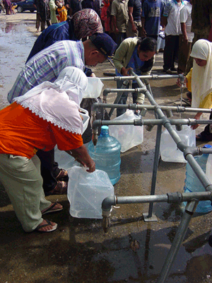

Bentuk pasif lagi
 Dari Dewi:
Dari Dewi:
Ada satu hal lagi yang ingin saya jelaskan kalau membuat kalimat pasif.
You remember that the object is what is acted on by the verb, and the subject is what does the acting. So in the following sentences the object, subject, and verb are fairly obvious.
Drag and drop the labels object, verb, subject and extra phrase to the correct part of the sentence.
- Active / Subject focus:
- Passive / Object focus:
However, some sentences do not have a single word as the object or subject, for example the sentence:
Banyak orang Australia menyumbangkan uang, pakaian dan bahan pokok lain.
The subject (those doing the donating) is ‘banyak orang Australia’ (three words).
The object (the things being donated) is ‘uang, pakaian dan bahan pokok lain’ (six words).
To make the sentence object focus, you need to move the entire phrase that makes up the object and subject around, not just part of it:
Uang, pakaian dan bahan pokok lain disumbangkan banyak orang Australia.
| 
Reproduced with the permission of Rob Walker and AusAID |
Komentar
 Re: Bentuk pasif lagi dari IndoGuRu pada jam 18:55.
Re: Bentuk pasif lagi dari IndoGuRu pada jam 18:55.
Inilah latihan lagi untuk belajar kalimat pasif.
Yang harus Anda lakukan adalah ketiklah subyek dan obyek dari kalimat berikut ke dalam text box di bawahnya.
Now use the worksheet attached to rewrite the sentences in object focus.
 |